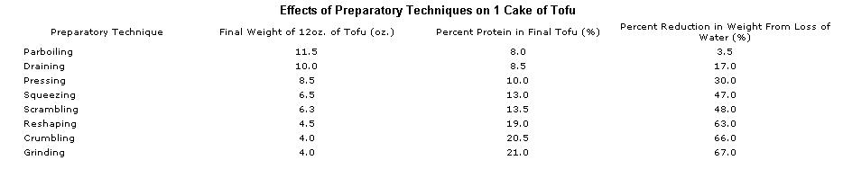
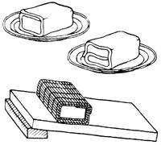
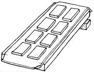
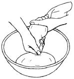

The following procedures are used regularly in cooking with tofu. Try to master them from the outset, since each gives the tofu a unique consistency and texture. The eight techniques listed below are in order of the amount of water each allows to remain in the tofu. Thus parboiling, the first technique, expels very little water, while crumbling rids the tofu of more than 65 percent of its moisture, leaving it very firm and containing more than 20 percent protein. The chart with this sidebar shows the effect of each technique on the weight, protein, and moisture content of a 12-ounce cake of tofu originally containing 7.8 percent protein and 84.9 percent water.
When fresh tofu is mashed or blended, 9 ounces yield 1 cup, and 12 ounces yield approximately 1-1/2 cups.
This technique is used with both regular tofu and kinugoshi (a smooth-textured tofu made from thick soymilk) for at least four different purposes: [1] to warm the tofu before serving it topped with hot sauces, [2] to freshen stored tofu that shows signs of spoiling, [3] to make the tofu slightly firmer so that when simmered in seasoned broths it absorbs flavors without diluting the cooking medium, [4] to impart to the tofu a slight cohesiveness desired when preparing aemono (Japanese-style tofu salads).
The addition of a small amount of salt to the water seasons the tofu slightly, imparts to it a somewhat firmer texture, and makes possible longer parboiling without the tofu developing an undesirably porous structure.
Because parboiling causes a slight loss in some of the tofu's delicate flavors, it should be used only when necessary.
REGULAR PARBOILING: Bring 1 quart water to a boil in a saucepan. Reduce heat to low and drop in tofu. Cover and heat for 2 to 3 minutes, or until tofu is well warmed. (For a firmer texture, cut tofu into 4 equal pieces before parboiling.) Lift out finished pieces with a slotted spoon.
SALTED WATER METHOD: Bring 2 cups water to a boil in a saucepan. Add 1/2 teaspoon salt, drop in (uncut) 12-ounce cake of tofu, and return to the boil. Remove pan from heat and allow to stand for 2 to 3 minutes. Remove tofu, discarding water.
Draining or storing tofu out of water (for no more than 12 hours) gives it a fairly firm texture and also helps preserve its flavor, since its subtle natural sweetness is lost quite easily in water. A 12-ounce cake of tofu drained for 8 hours will lose moisture equal to about 17 percent of its weight. The protein content of the final 10-ounce cake thereby increases from 7.8 to about 8.5 percent.
Place the tofu in a 1- or 2-quart flat-bottomed container. Cover well and refrigerate for 1 to 2 hours or, for a firmer texture, overnight. If set on a small colander or folded towel placed into the container beforehand, the tofu will drain even more thoroughly. If two cakes are stacked one on top of the other, the one on the bottom will be almost as firm as if it were pressed (see below). If the tofu was purchased in a sealed plastic tub, prick a tiny hole in bottom of tub, drain out any water, and place tofu and tub in container as described above.
When pressing tofu, it is important to preserve the form and structure of the cake so that it may later be cut into thin slices. Tofu is fully pressed when it can be picked up and held vertically in the air without crumbling. Pressing time may be varied to suit the dish being prepared: light pressing preserves the tofu's softness for use in tossed salads, while lengthy pressing gives firmer, stronger tofu for use in deep-frying.
Because of its delicate texture and unique structure (which holds water in millions of tiny "cells"), kinugoshi is almost never pressed. Doufu (Chinese-style firm tofu) has a cohesive structure and low water content and may be used without further pressing in any recipe calling for pressed tofu. Pat its surface dry with a cloth before use.
TOWEL AND FRIDGE METHOD: Wrap the tofu firmly in a small terry-cloth or cotton towel folded into fourths (facing), and set on a plate in a refrigerator for 1-1/2 to 2 hours or overnight. To decrease the pressing time, drain the tofu beforehand, place a 2- or 3-pound weight on top of the tofu, and replace the damp towel with a dry one after about 30 minutes. Or cut the cake horizontally into halves before pressing and place in the towel as illustrated below.
SLANTING PRESS METHOD: Wrap the tofu in a towel or bamboo mat (sudare)-or sandwich the tofu between bamboo mats-and place on a cutting board, tray, or large plate next to the sink. Raise the far end of the board several inches. Set a 2- to 4-pound weight on the tofu and let stand for 30 to 60 minutes (below).
SLICED TOFU METHOD: Cut the tofu crosswise into 1/2- to 3/4-inch-thick slices and arrange on two towels placed on a raised cutting board (below). Cover the slices with a double layer of towels and pat lightly to ensure even contact. Allow to stand for 30 to 60 minutes. This method is commonly used when preparing tofu for deep-frying. For faster results, top with a cutting board and 5-pound weight and change the towels after 10-minute intervals.
This process results in a mashed tofu that is slightly cohesive and has a texture resembling that of cottage cheese.
Place drained, parboiled, or pressed tofu at the center of a large dry dish towel and gather its corners to form a sack. Or use a tofu pressing sack if available. ( EDITOR'S NOTE: see MOTHER NO. 41, page 41 .) Twist sack closed, then squeeze tofu firmly, kneading it for 2 or 3 minutes to expel as much water as possible (below). Squeeze lightly enough so that no tofu penetrates the sack. Empty the squeezed tofu into a mixing bowl.
This technique causes a further separation of tofu curds and liquid whey resulting in a texture similar to that produced by squeezing, but one which is slightly firmer and more crumbly.
Place tofu in an unheated skillet. Using a (wooden) spatula, break tofu into small pieces. Now cook over medium heat for 4 to 5 minutes, stirring constantly and breaking tofu into smaller and smaller pieces until whey separates from curds. Pour contents of skillet into a fine-mesh strainer. Allow curds to drain for about 15 seconds if a soft consistency is desired, or for about 3 minutes for a firmer consistency. Spread curds on a large plate and allow to cool to room temperature.
This process yields a tofu cake having a very firm and cohesive consistency similar to that of natural cheese or processed ham. Called oshi-dofu, or "Pressed Tofu", in Japan, it is used in recipes calling for pieces the size of French-fried potatoes which hold their shape during cooking or tossing.
The first method given below takes about twice as long as the second, but yields a tofu that retains more of its natural flavor and texture. The addition of salt that it calls for prevents the tofu from developing a somewhat elastic, web-like structure while also seasoning it. The second method yields a firmer structure that holds together better during sautéing. The tofu undergoes a slight loss in flavor that is not very noticeable if served with a well-seasoned sauce in the typical Chinese style.
FIRM SEASONED TOFU: Combine 24 ounces tofu and 1 teaspoon salt in saucepan; mix well. Stirring constantly, cook over medium heat for about 4 minutes or until tofu begins to boil vigorously. Pour the tofu into a cloth-lined colander in the sink and allow to drain for several minutes. Transfer the cloth onto a cutting board and carefully fold the edges of the cloth over the tofu. Shape the tofu into a cake about 5 inches square and 1 inch thick. Place a pan filled with 3 or 4 quarts of water on top of the cloth (below) and press for 1 to 2 hours in a cool place. Unwrap and cut as directed . . . or re-wrap in a dry towel and refrigerate for later use.
VERY FIRM TOFU: Boil the tofu in unsalted water as when crumbling (see below). Drain tofu, then proceed as above, pressing the tofu for 30 to 60 minutes.
By reducing its water content to a minimum, we can obtain tofu with much the same texture as lightly sautéed, crumbly hamburger. Yet the tofu is slightly firmer, lighter, and fluffier, which makes it ideal for use in tossed salads, egg and grain dishes, spaghetti or curry sauces, and casseroles.
Combine 12 ounces tofu and 1 cup water in a saucepan. With a wooden spoon or spatula, break the tofu into very small pieces while bringing the water to a boil. Reduce heat and simmer for 1 to 2 minutes. Place a colander in the sink and line with a large cloth (or a tofu pressing sack). Pour the contents of the pan onto the cloth, gather its corners to form a sack, then twist closed. Using the bottom of a jar or a potato masher, press the tofu firmly against the bottom of the colander to expel as much water as possible. Empty the pressed tofu into a large bowl and allow to cool for several minutes. Now break the tofu into very small pieces, using your fingertips or a spoon.
This process yields tofu having much the same light, dry consistency as crumbled tofu, but with a texture that is finer and more uniform.
Using either regular tofu or kinugoshi, prepare reshaped or crumbled tofu (described above). Refrigerate tofu in a covered container until well chilled. Then, cutting into chunks if necessary, run through a meat grinder with a medium-fine attachment.
|
 |
 |
 |
|
 |
|
|